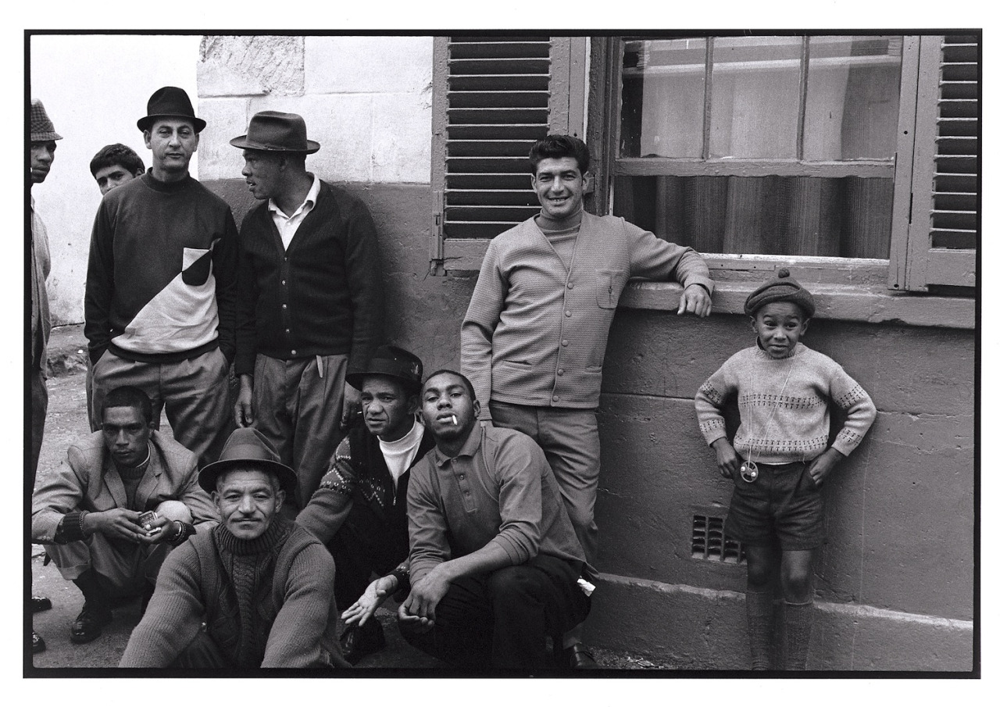
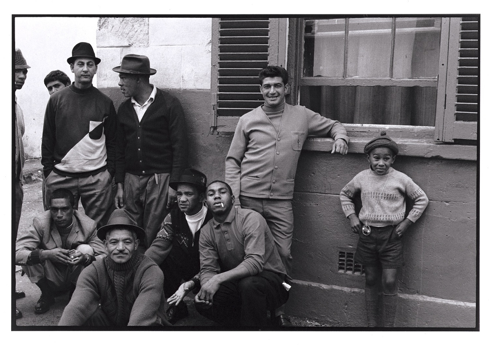
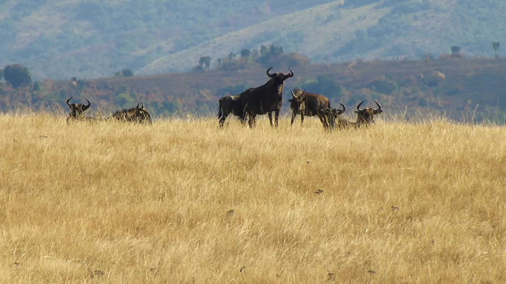
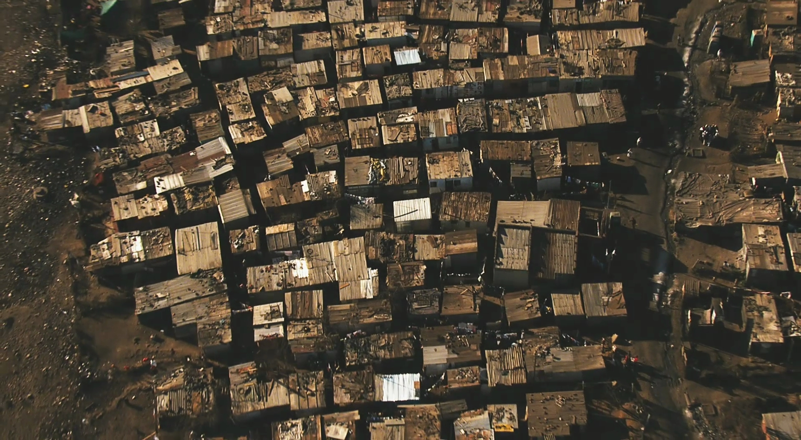
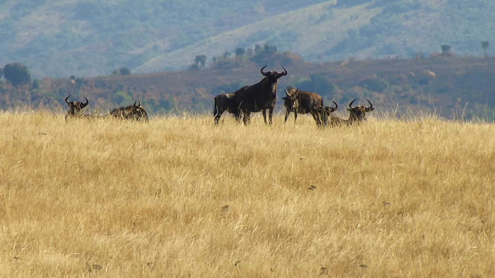
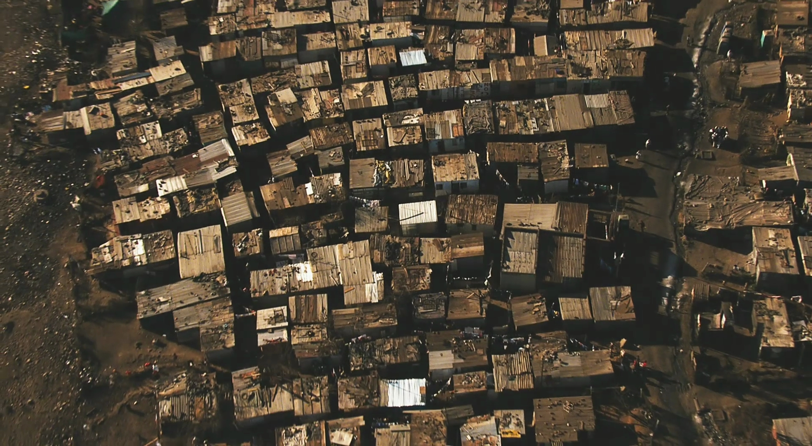
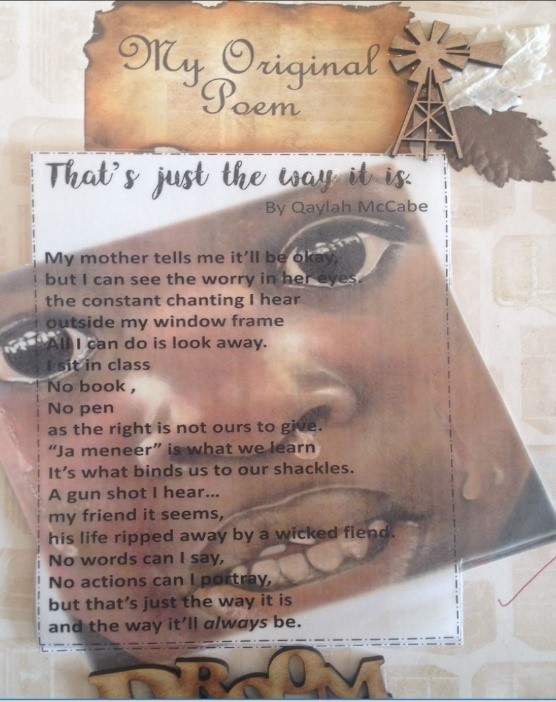
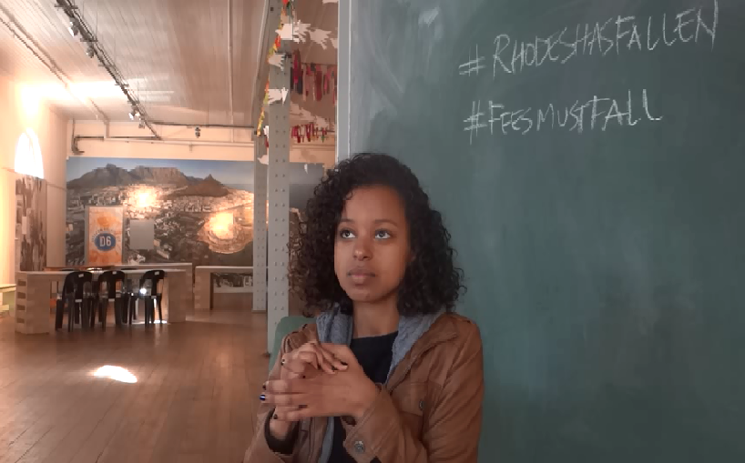

 




移情的产生
“她(被访者)说话的方式让我意识到，在种族隔离时期，生活非常痛苦。当她告诉我她们被像动物一样驱赶出自己的家园时，我也非常情绪化和不安。尽管谈到这些经历她还是很生气很难过，她仍然对我说‘原谅是自我治愈的武器。’
他提到的一些事让我震惊了。他提到他见到的三个人被警察殴打，他们用来辱骂他的词我都不能提。他还分享了一些关于他过去工作的情况。‘我们必须工作一整天一整周但赚到的薪水却少得可怜’。他们所挣的工资一周都不到500兰特。 我感到震惊，因为像我自己家中一样，他们家中也只有他一个人赚钱。一个人赚的这些钱贴补全家完全不够用，这些钱很快就消失在食物和交通里面了，不可能有剩余的钱来交学费的
促进包容理解
我妈妈告诉我一切都会好起来的，
但我能看到她沉重的忧虑。
我窗外都是学生吵嚷的声音，
而我能做的只有移开我的视线。
我坐在教室中，
没有书本，
没有笔，
好像我们本就不应有权利。
我们学的是“你说的对，先生”（阿非利卡语）
这就是束缚我们的脚镣。
外面一声枪响……
那好像是我的朋友，
他的生命被邪恶的魔鬼夺走。
我什么也不能说，什么也不能做。
事情本来就是这样的，
一切也会这样继续下去。
“有一个父亲在口述史项目访谈中向儿子解释了他是如何在一个铁皮搭的棚户中长大的，也没有机会接受良好的教育。但他正试图给儿子一个更好的生活。这就是为什么他希望自己的儿子努力学习。在项目反思中男孩提到现在他更了解父亲的情况， 他知道了父亲以前生活在一个没有热水的非正式安置点中。他明白了父亲无法帮助他的学业是因为父亲自己没有机会接受教育。现在他明白了父亲能把他送到一所好学校是怎样的成就，他为父亲感到骄傲。
·通过移情促进社会公正
口述史项目阐释了移情带来的情感痛苦对移情主体的影响。移情主体会对造成客体痛苦的加害者感到愤怒。在口述史项目中，这往往体现在学生对种族隔离政府的愤怒。此外，移情主体也会为客体遭受的不公正待遇而不平。
我从受访者那里听说了特洛伊木马事件。同我一般年龄的青年因为追求自由而受迫害。许多人失去了母亲，许多人失去了儿子，听亲历人讲述这些事件让我感受到了毁灭性的打击。 口述史项目以前，这些东西对我来说只是书本上的内容。当他们坐在你对面跟你谈话，这一切都改变了，我也为他们感到很糟糕。 索韦托学生起义发生四十年后，南非正经历着类似的学生反抗。虽然宪法中强调免费教育，教育却已经成为一种商品，一个人能接受怎样的教育完全取决于他的经济实力。 前总统纳尔逊·曼德拉说：教育是你用来改变世界的最有力的武器... 革命尚未完成，斗争还要继续。像我这样的人没有过去的包袱，所以当面对不公平和不平等时，我需要站出来。
·通过口述史项目理解社区和社会
“斗争真的结束了吗？你认为今天学校还存在某种形式的种族隔离制度吗？你们当时奠基的工作现在完成了吗？种族隔离法律已经被移除，但20年后种族隔离真的不存在了么？ 我们真的是一个和谐一体的国家吗？我们的过去是不是现在的一个倒影？你认为现今仍有种族间隔离的证据吗？目前的南非是否比种族隔离时代好，哪里好？”
“现在社会的糟糕状况是不应该的，但我们的过去绝对在本质上影响着这个国家的今天。我们需要努力超越这些困境并改正过去的错误，弥补过去的伤痛”。
“首先，我认为区分这样一个事实非常重要，即我们的斗争与父母与祖父母一辈的斗争不一样。尽管它们有相似之处，但我认为如果说两者相同， 这几乎是对他们经历过的痛苦的冒犯。我们可能不像我们的父母受到那样严重的压迫。但这是一种完全不同的压迫形式。这与他们经历的一样糟糕么？不。 它们有共同点吗？有。这些相似性一次又一次地恶性循环，直到我们这代年轻人决定解放自己才会发生改变。”